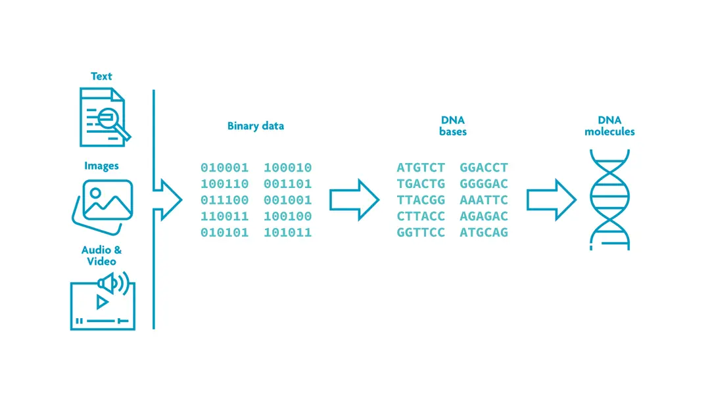

Encoding data (binary) into DNA for the long term
Imec, a global leader in nanoelectronics and digital innovation, and Atlas Data Storage joined together to accelerate the development of digital data storage using synthetic DNA.
In the long term, hard drives and other storage devices that are magnet based have huge density limits
DNA is extremely compact and durable. With it's own 4 letter "language", one gram of DNA could encode up to hundreds of petabytes of binary data.

The DNA storage device is a chip that contains a (custom and dense) array of electrochemical cells on top of a CMOS ASIC control unit
As demand for data storage grows, so does the need for
sustainable high-density storage solutions.
This partnership is a shows how life science
and computer science can give us new ways to
store and process data.
Introducing more options for storing computer data means competitor for companies that focus on producing SSDs, Hard Drives, and other formats.
In other words,